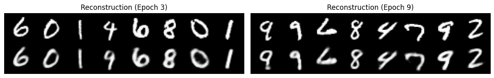
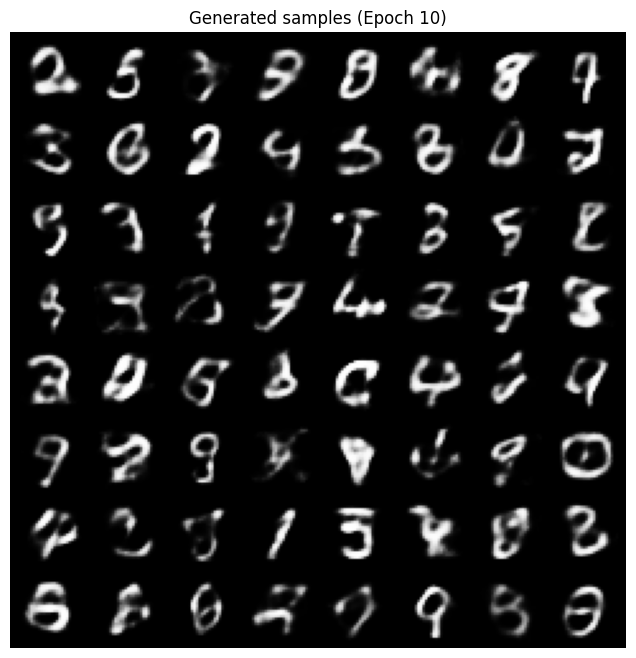

import torch
import torch.utils.data
from torch import nn, optim
from torch.nn import functional as F
from torchvision import datasets, transforms
from torchvision.utils import save_image
import matplotlib.pyplot as plt
import os
os.makedirs("results", exist_ok=True)Variational Autoencoder
Generative modeling with VAEs on MNIST using PyTorch.
neural-networks
optimization
variational-inference
Implements a variational autoencoder (VAE) in PyTorch for the MNIST dataset, covering the encoder-decoder architecture, the reparameterization trick, and the ELBO loss combining reconstruction and KL divergence terms.
This example is taken and adapted from the torch example repository
BATCH_SIZE = 128train_loader = torch.utils.data.DataLoader(
datasets.MNIST('./data', train=True, download=True,
transform=transforms.ToTensor()),
batch_size=BATCH_SIZE, shuffle=True)
test_loader = torch.utils.data.DataLoader(
datasets.MNIST('./data', train=False, transform=transforms.ToTensor()),
batch_size=BATCH_SIZE, shuffle=True)0.3%0.7%1.0%1.3%1.7%2.0%2.3%2.6%3.0%3.3%3.6%4.0%4.3%4.6%5.0%5.3%5.6%6.0%6.3%6.6%6.9%7.3%7.6%7.9%8.3%8.6%8.9%9.3%9.6%9.9%10.2%10.6%10.9%11.2%11.6%11.9%12.2%12.6%12.9%13.2%13.6%13.9%14.2%14.5%14.9%15.2%15.5%15.9%16.2%16.5%16.9%17.2%17.5%17.9%18.2%18.5%18.8%19.2%19.5%19.8%20.2%20.5%20.8%21.2%21.5%21.8%22.1%22.5%22.8%23.1%23.5%23.8%24.1%24.5%24.8%25.1%25.5%25.8%26.1%26.4%26.8%27.1%27.4%27.8%28.1%28.4%28.8%29.1%29.4%29.8%30.1%30.4%30.7%31.1%31.4%31.7%32.1%32.4%32.7%33.1%33.4%33.7%34.0%34.4%34.7%35.0%35.4%35.7%36.0%36.4%36.7%37.0%37.4%37.7%38.0%38.3%38.7%39.0%39.3%39.7%40.0%40.3%40.7%41.0%41.3%41.7%42.0%42.3%42.6%43.0%43.3%43.6%44.0%44.3%44.6%45.0%45.3%45.6%45.9%46.3%46.6%46.9%47.3%47.6%47.9%48.3%48.6%48.9%49.3%49.6%49.9%50.2%50.6%50.9%51.2%51.6%51.9%52.2%52.6%52.9%53.2%53.6%53.9%54.2%54.5%54.9%55.2%55.5%55.9%56.2%56.5%56.9%57.2%57.5%57.9%58.2%58.5%58.8%59.2%59.5%59.8%60.2%60.5%60.8%61.2%61.5%61.8%62.1%62.5%62.8%63.1%63.5%63.8%64.1%64.5%64.8%65.1%65.5%65.8%66.1%66.4%66.8%67.1%67.4%67.8%68.1%68.4%68.8%69.1%69.4%69.8%70.1%70.4%70.7%71.1%71.4%71.7%72.1%72.4%72.7%73.1%73.4%73.7%74.0%74.4%74.7%75.0%75.4%75.7%76.0%76.4%76.7%77.0%77.4%77.7%78.0%78.3%78.7%79.0%79.3%79.7%80.0%80.3%80.7%81.0%81.3%81.7%82.0%82.3%82.6%83.0%83.3%83.6%84.0%84.3%84.6%85.0%85.3%85.6%85.9%86.3%86.6%86.9%87.3%87.6%87.9%88.3%88.6%88.9%89.3%89.6%89.9%90.2%90.6%90.9%91.2%91.6%91.9%92.2%92.6%92.9%93.2%93.6%93.9%94.2%94.5%94.9%95.2%95.5%95.9%96.2%96.5%96.9%97.2%97.5%97.9%98.2%98.5%98.8%99.2%99.5%99.8%100.0%
100.0%
2.0%4.0%6.0%7.9%9.9%11.9%13.9%15.9%17.9%19.9%21.9%23.8%25.8%27.8%29.8%31.8%33.8%35.8%37.8%39.7%41.7%43.7%45.7%47.7%49.7%51.7%53.7%55.6%57.6%59.6%61.6%63.6%65.6%67.6%69.6%71.5%73.5%75.5%77.5%79.5%81.5%83.5%85.5%87.4%89.4%91.4%93.4%95.4%97.4%99.4%100.0%
100.0%class VAE(nn.Module):
def __init__(self):
super(VAE, self).__init__()
self.fc1 = nn.Linear(784, 400)
self.fc21 = nn.Linear(400, 20)
self.fc22 = nn.Linear(400, 20)
self.fc3 = nn.Linear(20, 400)
self.fc4 = nn.Linear(400, 784)
self.relu = nn.ReLU()
self.sigmoid = nn.Sigmoid()
def encode(self, x):
h1 = self.relu(self.fc1(x))
return self.fc21(h1), self.fc22(h1)
def reparameterize(self, mu, logvar):
if self.training:
std = logvar.mul(0.5).exp_()
eps = torch.randn_like(std)
return eps.mul(std).add_(mu)
else:
return mu
def decode(self, z):
h3 = self.relu(self.fc3(z))
return self.sigmoid(self.fc4(h3))
def forward(self, x):
mu, logvar = self.encode(x.view(-1, 784))
z = self.reparameterize(mu, logvar)
return self.decode(z), mu, logvarmodel = VAE()
optimizer = optim.Adam(model.parameters(), lr=1e-3)def loss_function(recon_x, x, mu, logvar):
BCE = F.binary_cross_entropy(recon_x, x.view(-1, 784), reduction='sum')
# see Appendix B from VAE paper:
# Kingma and Welling. Auto-Encoding Variational Bayes. ICLR, 2014
# https://arxiv.org/abs/1312.6114
# 0.5 * sum(1 + log(sigma^2) - mu^2 - sigma^2)
KLD = -0.5 * torch.sum(1 + logvar - mu.pow(2) - logvar.exp())
return BCE + KLDdef train(epoch):
model.train()
train_loss = 0
for batch_idx, (data, _) in enumerate(train_loader):
optimizer.zero_grad()
recon_batch, mu, logvar = model(data)
loss = loss_function(recon_batch, data, mu, logvar)
loss.backward()
train_loss += loss.item()
optimizer.step()
if batch_idx % 20 == 0:
print('Train Epoch: {} [{}/{} ({:.0f}%)]\tLoss: {:.6f}'.format(
epoch, batch_idx * len(data), len(train_loader.dataset),
100. * batch_idx / len(train_loader),
loss.item() / len(data)))
print('====> Epoch: {} Average loss: {:.4f}'.format(
epoch, train_loss / len(train_loader.dataset)))def test(epoch):
model.eval()
test_loss = 0
with torch.no_grad():
for i, (data, _) in enumerate(test_loader):
recon_batch, mu, logvar = model(data)
test_loss += loss_function(recon_batch, data, mu, logvar).item()
if i == 0:
n = min(data.size(0), 8)
comparison = torch.cat([data[:n],
recon_batch.view(BATCH_SIZE, 1, 28, 28)[:n]])
save_image(comparison.data,
'results/reconstruction_' + str(epoch) + '.png', nrow=n)
test_loss /= len(test_loader.dataset)
print('====> Test set loss: {:.4f}'.format(test_loss))for epoch in range(1, 10 + 1):
train(epoch)
test(epoch)
with torch.no_grad():
sample = torch.randn(64, 20)
sample = model.decode(sample)
save_image(sample.view(64, 1, 28, 28),
'results/sample_' + str(epoch) + '.png')Train Epoch: 1 [0/60000 (0%)] Loss: 548.634521
Train Epoch: 1 [2560/60000 (4%)] Loss: 236.767303
Train Epoch: 1 [5120/60000 (9%)] Loss: 209.762161
Train Epoch: 1 [7680/60000 (13%)] Loss: 202.013107
Train Epoch: 1 [10240/60000 (17%)] Loss: 181.194870
Train Epoch: 1 [12800/60000 (21%)] Loss: 173.787308
Train Epoch: 1 [15360/60000 (26%)] Loss: 165.583420
Train Epoch: 1 [17920/60000 (30%)] Loss: 162.148636
Train Epoch: 1 [20480/60000 (34%)] Loss: 156.180466
Train Epoch: 1 [23040/60000 (38%)] Loss: 158.943665
Train Epoch: 1 [25600/60000 (43%)] Loss: 147.105698
Train Epoch: 1 [28160/60000 (47%)] Loss: 152.154602
Train Epoch: 1 [30720/60000 (51%)] Loss: 145.153564
Train Epoch: 1 [33280/60000 (55%)] Loss: 147.480225
Train Epoch: 1 [35840/60000 (60%)] Loss: 142.398788
Train Epoch: 1 [38400/60000 (64%)] Loss: 146.010529
Train Epoch: 1 [40960/60000 (68%)] Loss: 133.627197
Train Epoch: 1 [43520/60000 (72%)] Loss: 136.690384
Train Epoch: 1 [46080/60000 (77%)] Loss: 134.174911
Train Epoch: 1 [48640/60000 (81%)] Loss: 135.501343
Train Epoch: 1 [51200/60000 (85%)] Loss: 136.076080
Train Epoch: 1 [53760/60000 (90%)] Loss: 134.992554
Train Epoch: 1 [56320/60000 (94%)] Loss: 138.561661
Train Epoch: 1 [58880/60000 (98%)] Loss: 125.460587
====> Epoch: 1 Average loss: 164.1723
====> Test set loss: 120.3354
Train Epoch: 2 [0/60000 (0%)] Loss: 131.731873
Train Epoch: 2 [2560/60000 (4%)] Loss: 127.556808
Train Epoch: 2 [5120/60000 (9%)] Loss: 129.977646
Train Epoch: 2 [7680/60000 (13%)] Loss: 130.733414
Train Epoch: 2 [10240/60000 (17%)] Loss: 128.357269
Train Epoch: 2 [12800/60000 (21%)] Loss: 122.836334
Train Epoch: 2 [15360/60000 (26%)] Loss: 124.673889
Train Epoch: 2 [17920/60000 (30%)] Loss: 121.683350
Train Epoch: 2 [20480/60000 (34%)] Loss: 124.010063
Train Epoch: 2 [23040/60000 (38%)] Loss: 117.151344
Train Epoch: 2 [25600/60000 (43%)] Loss: 118.172012
Train Epoch: 2 [28160/60000 (47%)] Loss: 114.916489
Train Epoch: 2 [30720/60000 (51%)] Loss: 119.968933
Train Epoch: 2 [33280/60000 (55%)] Loss: 122.616447
Train Epoch: 2 [35840/60000 (60%)] Loss: 119.052917
Train Epoch: 2 [38400/60000 (64%)] Loss: 124.251404
Train Epoch: 2 [40960/60000 (68%)] Loss: 120.944016
Train Epoch: 2 [43520/60000 (72%)] Loss: 119.940079
Train Epoch: 2 [46080/60000 (77%)] Loss: 123.439484
Train Epoch: 2 [48640/60000 (81%)] Loss: 121.641663
Train Epoch: 2 [51200/60000 (85%)] Loss: 117.665115
Train Epoch: 2 [53760/60000 (90%)] Loss: 121.112869
Train Epoch: 2 [56320/60000 (94%)] Loss: 114.654282
Train Epoch: 2 [58880/60000 (98%)] Loss: 118.567261
====> Epoch: 2 Average loss: 122.0352
====> Test set loss: 107.2045
Train Epoch: 3 [0/60000 (0%)] Loss: 117.265152
Train Epoch: 3 [2560/60000 (4%)] Loss: 120.659363
Train Epoch: 3 [5120/60000 (9%)] Loss: 119.945419
Train Epoch: 3 [7680/60000 (13%)] Loss: 113.292702
Train Epoch: 3 [10240/60000 (17%)] Loss: 116.421890
Train Epoch: 3 [12800/60000 (21%)] Loss: 117.810295
Train Epoch: 3 [15360/60000 (26%)] Loss: 118.534966
Train Epoch: 3 [17920/60000 (30%)] Loss: 115.239372
Train Epoch: 3 [20480/60000 (34%)] Loss: 116.788185
Train Epoch: 3 [23040/60000 (38%)] Loss: 119.369278
Train Epoch: 3 [25600/60000 (43%)] Loss: 111.231339
Train Epoch: 3 [28160/60000 (47%)] Loss: 112.620918
Train Epoch: 3 [30720/60000 (51%)] Loss: 119.008453
Train Epoch: 3 [33280/60000 (55%)] Loss: 111.599335
Train Epoch: 3 [35840/60000 (60%)] Loss: 114.980438
Train Epoch: 3 [38400/60000 (64%)] Loss: 118.566757
Train Epoch: 3 [40960/60000 (68%)] Loss: 115.240967
Train Epoch: 3 [43520/60000 (72%)] Loss: 113.397987
Train Epoch: 3 [46080/60000 (77%)] Loss: 111.692711
Train Epoch: 3 [48640/60000 (81%)] Loss: 111.034027
Train Epoch: 3 [51200/60000 (85%)] Loss: 114.306198
Train Epoch: 3 [53760/60000 (90%)] Loss: 114.897110
Train Epoch: 3 [56320/60000 (94%)] Loss: 110.192017
Train Epoch: 3 [58880/60000 (98%)] Loss: 114.898056
====> Epoch: 3 Average loss: 114.7251
====> Test set loss: 103.5963
Train Epoch: 4 [0/60000 (0%)] Loss: 110.943779
Train Epoch: 4 [2560/60000 (4%)] Loss: 113.126038
Train Epoch: 4 [5120/60000 (9%)] Loss: 112.282608
Train Epoch: 4 [7680/60000 (13%)] Loss: 109.765732
Train Epoch: 4 [10240/60000 (17%)] Loss: 110.486633
Train Epoch: 4 [12800/60000 (21%)] Loss: 111.794464
Train Epoch: 4 [15360/60000 (26%)] Loss: 112.159172
Train Epoch: 4 [17920/60000 (30%)] Loss: 112.933701
Train Epoch: 4 [20480/60000 (34%)] Loss: 116.019157
Train Epoch: 4 [23040/60000 (38%)] Loss: 112.606613
Train Epoch: 4 [25600/60000 (43%)] Loss: 109.638031
Train Epoch: 4 [28160/60000 (47%)] Loss: 113.518456
Train Epoch: 4 [30720/60000 (51%)] Loss: 115.787491
Train Epoch: 4 [33280/60000 (55%)] Loss: 109.828369
Train Epoch: 4 [35840/60000 (60%)] Loss: 111.565414
Train Epoch: 4 [38400/60000 (64%)] Loss: 112.422310
Train Epoch: 4 [40960/60000 (68%)] Loss: 109.158768
Train Epoch: 4 [43520/60000 (72%)] Loss: 111.735451
Train Epoch: 4 [46080/60000 (77%)] Loss: 110.691467
Train Epoch: 4 [48640/60000 (81%)] Loss: 112.220108
Train Epoch: 4 [51200/60000 (85%)] Loss: 115.208496
Train Epoch: 4 [53760/60000 (90%)] Loss: 112.054604
Train Epoch: 4 [56320/60000 (94%)] Loss: 113.814384
Train Epoch: 4 [58880/60000 (98%)] Loss: 108.074463
====> Epoch: 4 Average loss: 111.7308
====> Test set loss: 101.2154
Train Epoch: 5 [0/60000 (0%)] Loss: 108.546211
Train Epoch: 5 [2560/60000 (4%)] Loss: 112.200302
Train Epoch: 5 [5120/60000 (9%)] Loss: 110.150421
Train Epoch: 5 [7680/60000 (13%)] Loss: 108.479080
Train Epoch: 5 [10240/60000 (17%)] Loss: 109.602615
Train Epoch: 5 [12800/60000 (21%)] Loss: 109.784431
Train Epoch: 5 [15360/60000 (26%)] Loss: 109.162491
Train Epoch: 5 [17920/60000 (30%)] Loss: 109.937584
Train Epoch: 5 [20480/60000 (34%)] Loss: 110.969543
Train Epoch: 5 [23040/60000 (38%)] Loss: 111.078796
Train Epoch: 5 [25600/60000 (43%)] Loss: 106.948372
Train Epoch: 5 [28160/60000 (47%)] Loss: 108.658745
Train Epoch: 5 [30720/60000 (51%)] Loss: 106.874847
Train Epoch: 5 [33280/60000 (55%)] Loss: 109.023651
Train Epoch: 5 [35840/60000 (60%)] Loss: 111.881744
Train Epoch: 5 [38400/60000 (64%)] Loss: 108.394989
Train Epoch: 5 [40960/60000 (68%)] Loss: 109.016220
Train Epoch: 5 [43520/60000 (72%)] Loss: 112.585129
Train Epoch: 5 [46080/60000 (77%)] Loss: 107.197525
Train Epoch: 5 [48640/60000 (81%)] Loss: 107.831329
Train Epoch: 5 [51200/60000 (85%)] Loss: 109.893654
Train Epoch: 5 [53760/60000 (90%)] Loss: 106.641510
Train Epoch: 5 [56320/60000 (94%)] Loss: 113.776169
Train Epoch: 5 [58880/60000 (98%)] Loss: 108.198402
====> Epoch: 5 Average loss: 109.8871
====> Test set loss: 99.8494
Train Epoch: 6 [0/60000 (0%)] Loss: 110.150063
Train Epoch: 6 [2560/60000 (4%)] Loss: 107.798172
Train Epoch: 6 [5120/60000 (9%)] Loss: 112.263824
Train Epoch: 6 [7680/60000 (13%)] Loss: 108.610275
Train Epoch: 6 [10240/60000 (17%)] Loss: 103.126335
Train Epoch: 6 [12800/60000 (21%)] Loss: 107.636826
Train Epoch: 6 [15360/60000 (26%)] Loss: 112.287262
Train Epoch: 6 [17920/60000 (30%)] Loss: 109.707733
Train Epoch: 6 [20480/60000 (34%)] Loss: 107.782089
Train Epoch: 6 [23040/60000 (38%)] Loss: 107.041412
Train Epoch: 6 [25600/60000 (43%)] Loss: 104.542320
Train Epoch: 6 [28160/60000 (47%)] Loss: 108.867142
Train Epoch: 6 [30720/60000 (51%)] Loss: 111.374702
Train Epoch: 6 [33280/60000 (55%)] Loss: 103.376457
Train Epoch: 6 [35840/60000 (60%)] Loss: 107.413147
Train Epoch: 6 [38400/60000 (64%)] Loss: 108.295319
Train Epoch: 6 [40960/60000 (68%)] Loss: 109.501320
Train Epoch: 6 [43520/60000 (72%)] Loss: 107.235397
Train Epoch: 6 [46080/60000 (77%)] Loss: 104.432060
Train Epoch: 6 [48640/60000 (81%)] Loss: 114.063919
Train Epoch: 6 [51200/60000 (85%)] Loss: 109.082703
Train Epoch: 6 [53760/60000 (90%)] Loss: 108.684021
Train Epoch: 6 [56320/60000 (94%)] Loss: 111.484451
Train Epoch: 6 [58880/60000 (98%)] Loss: 109.607918
====> Epoch: 6 Average loss: 108.6958
====> Test set loss: 99.3851
Train Epoch: 7 [0/60000 (0%)] Loss: 107.670486
Train Epoch: 7 [2560/60000 (4%)] Loss: 111.157127
Train Epoch: 7 [5120/60000 (9%)] Loss: 110.604736
Train Epoch: 7 [7680/60000 (13%)] Loss: 106.069023
Train Epoch: 7 [10240/60000 (17%)] Loss: 108.498962
Train Epoch: 7 [12800/60000 (21%)] Loss: 106.300484
Train Epoch: 7 [15360/60000 (26%)] Loss: 108.293655
Train Epoch: 7 [17920/60000 (30%)] Loss: 110.514900
Train Epoch: 7 [20480/60000 (34%)] Loss: 109.119965
Train Epoch: 7 [23040/60000 (38%)] Loss: 103.302643
Train Epoch: 7 [25600/60000 (43%)] Loss: 105.771667
Train Epoch: 7 [28160/60000 (47%)] Loss: 108.977036
Train Epoch: 7 [30720/60000 (51%)] Loss: 108.591492
Train Epoch: 7 [33280/60000 (55%)] Loss: 100.977043
Train Epoch: 7 [35840/60000 (60%)] Loss: 109.002068
Train Epoch: 7 [38400/60000 (64%)] Loss: 108.723053
Train Epoch: 7 [40960/60000 (68%)] Loss: 108.024910
Train Epoch: 7 [43520/60000 (72%)] Loss: 101.559898
Train Epoch: 7 [46080/60000 (77%)] Loss: 105.333687
Train Epoch: 7 [48640/60000 (81%)] Loss: 105.032669
Train Epoch: 7 [51200/60000 (85%)] Loss: 106.020271
Train Epoch: 7 [53760/60000 (90%)] Loss: 106.608353
Train Epoch: 7 [56320/60000 (94%)] Loss: 105.024284
Train Epoch: 7 [58880/60000 (98%)] Loss: 109.724609
====> Epoch: 7 Average loss: 107.7882
====> Test set loss: 99.0749
Train Epoch: 8 [0/60000 (0%)] Loss: 111.200348
Train Epoch: 8 [2560/60000 (4%)] Loss: 110.275085
Train Epoch: 8 [5120/60000 (9%)] Loss: 104.035355
Train Epoch: 8 [7680/60000 (13%)] Loss: 105.540955
Train Epoch: 8 [10240/60000 (17%)] Loss: 106.949150
Train Epoch: 8 [12800/60000 (21%)] Loss: 108.091881
Train Epoch: 8 [15360/60000 (26%)] Loss: 109.387390
Train Epoch: 8 [17920/60000 (30%)] Loss: 108.231750
Train Epoch: 8 [20480/60000 (34%)] Loss: 108.981506
Train Epoch: 8 [23040/60000 (38%)] Loss: 108.095581
Train Epoch: 8 [25600/60000 (43%)] Loss: 109.591125
Train Epoch: 8 [28160/60000 (47%)] Loss: 107.178627
Train Epoch: 8 [30720/60000 (51%)] Loss: 109.066597
Train Epoch: 8 [33280/60000 (55%)] Loss: 110.745300
Train Epoch: 8 [35840/60000 (60%)] Loss: 108.644302
Train Epoch: 8 [38400/60000 (64%)] Loss: 104.321968
Train Epoch: 8 [40960/60000 (68%)] Loss: 106.065765
Train Epoch: 8 [43520/60000 (72%)] Loss: 105.985229
Train Epoch: 8 [46080/60000 (77%)] Loss: 105.464775
Train Epoch: 8 [48640/60000 (81%)] Loss: 106.755745
Train Epoch: 8 [51200/60000 (85%)] Loss: 110.724197
Train Epoch: 8 [53760/60000 (90%)] Loss: 107.127319
Train Epoch: 8 [56320/60000 (94%)] Loss: 103.233719
Train Epoch: 8 [58880/60000 (98%)] Loss: 106.832184
====> Epoch: 8 Average loss: 107.1373
====> Test set loss: 97.9776
Train Epoch: 9 [0/60000 (0%)] Loss: 107.381592
Train Epoch: 9 [2560/60000 (4%)] Loss: 108.062187
Train Epoch: 9 [5120/60000 (9%)] Loss: 106.987198
Train Epoch: 9 [7680/60000 (13%)] Loss: 105.263321
Train Epoch: 9 [10240/60000 (17%)] Loss: 104.146004
Train Epoch: 9 [12800/60000 (21%)] Loss: 105.281403
Train Epoch: 9 [15360/60000 (26%)] Loss: 108.410995
Train Epoch: 9 [17920/60000 (30%)] Loss: 107.729935
Train Epoch: 9 [20480/60000 (34%)] Loss: 106.034317
Train Epoch: 9 [23040/60000 (38%)] Loss: 106.851746
Train Epoch: 9 [25600/60000 (43%)] Loss: 107.023514
Train Epoch: 9 [28160/60000 (47%)] Loss: 108.563576
Train Epoch: 9 [30720/60000 (51%)] Loss: 111.120827
Train Epoch: 9 [33280/60000 (55%)] Loss: 109.766617
Train Epoch: 9 [35840/60000 (60%)] Loss: 105.246010
Train Epoch: 9 [38400/60000 (64%)] Loss: 106.029976
Train Epoch: 9 [40960/60000 (68%)] Loss: 107.460793
Train Epoch: 9 [43520/60000 (72%)] Loss: 105.061920
Train Epoch: 9 [46080/60000 (77%)] Loss: 112.483910
Train Epoch: 9 [48640/60000 (81%)] Loss: 107.765755
Train Epoch: 9 [51200/60000 (85%)] Loss: 105.779938
Train Epoch: 9 [53760/60000 (90%)] Loss: 106.320320
Train Epoch: 9 [56320/60000 (94%)] Loss: 109.062149
Train Epoch: 9 [58880/60000 (98%)] Loss: 107.750999
====> Epoch: 9 Average loss: 106.5836
====> Test set loss: 97.2389
Train Epoch: 10 [0/60000 (0%)] Loss: 105.873734
Train Epoch: 10 [2560/60000 (4%)] Loss: 104.698433
Train Epoch: 10 [5120/60000 (9%)] Loss: 103.561890
Train Epoch: 10 [7680/60000 (13%)] Loss: 109.678497
Train Epoch: 10 [10240/60000 (17%)] Loss: 107.231934
Train Epoch: 10 [12800/60000 (21%)] Loss: 106.615662
Train Epoch: 10 [15360/60000 (26%)] Loss: 102.571754
Train Epoch: 10 [17920/60000 (30%)] Loss: 109.108490
Train Epoch: 10 [20480/60000 (34%)] Loss: 107.755447
Train Epoch: 10 [23040/60000 (38%)] Loss: 103.485107
Train Epoch: 10 [25600/60000 (43%)] Loss: 107.544464
Train Epoch: 10 [28160/60000 (47%)] Loss: 106.768890
Train Epoch: 10 [30720/60000 (51%)] Loss: 106.400993
Train Epoch: 10 [33280/60000 (55%)] Loss: 108.585594
Train Epoch: 10 [35840/60000 (60%)] Loss: 101.729080
Train Epoch: 10 [38400/60000 (64%)] Loss: 104.781586
Train Epoch: 10 [40960/60000 (68%)] Loss: 104.166504
Train Epoch: 10 [43520/60000 (72%)] Loss: 109.962120
Train Epoch: 10 [46080/60000 (77%)] Loss: 102.225922
Train Epoch: 10 [48640/60000 (81%)] Loss: 105.121124
Train Epoch: 10 [51200/60000 (85%)] Loss: 105.502281
Train Epoch: 10 [53760/60000 (90%)] Loss: 100.612816
Train Epoch: 10 [56320/60000 (94%)] Loss: 104.523346
Train Epoch: 10 [58880/60000 (98%)] Loss: 108.477737
====> Epoch: 10 Average loss: 106.1819
====> Test set loss: 96.4372from PIL import Image as PILImage
import numpy as npfig, axes = plt.subplots(1, 2, figsize=(12, 4))
img3 = PILImage.open("results/reconstruction_3.png")
axes[0].imshow(np.array(img3), cmap="gray")
axes[0].set_title("Reconstruction (Epoch 3)")
axes[0].axis("off")
img9 = PILImage.open("results/reconstruction_9.png")
axes[1].imshow(np.array(img9), cmap="gray")
axes[1].set_title("Reconstruction (Epoch 9)")
axes[1].axis("off")
plt.tight_layout()
img_sample = PILImage.open("results/sample_10.png")
plt.figure(figsize=(8, 8))
plt.imshow(np.array(img_sample), cmap="gray")
plt.title("Generated samples (Epoch 10)")
plt.axis("off");